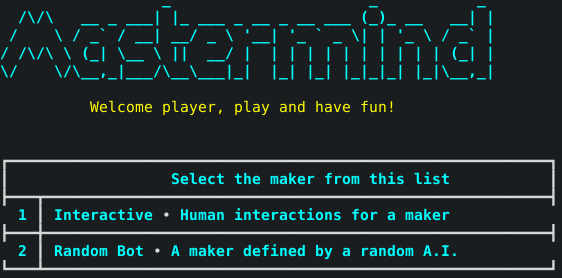
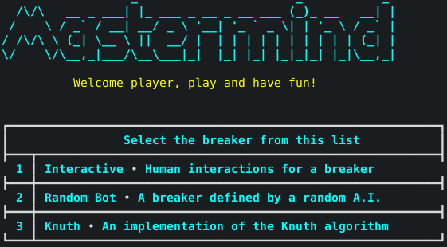
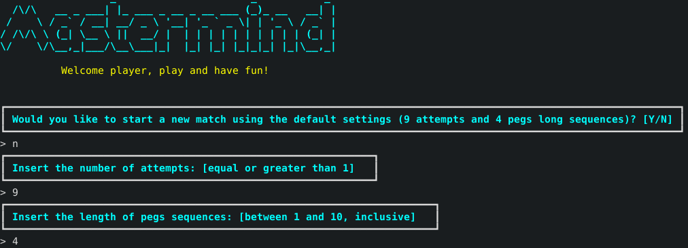
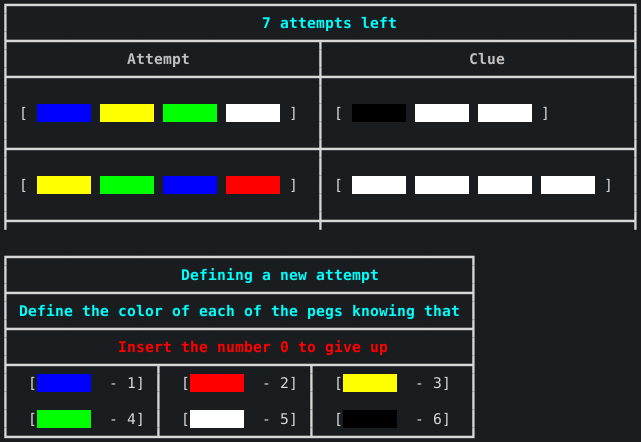
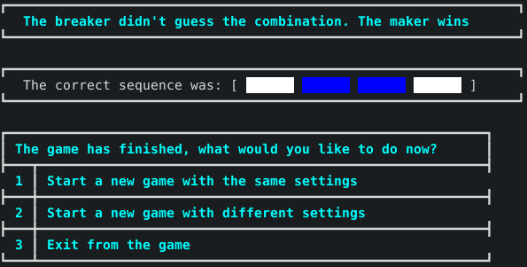

Guida al gioco¶
Mastermind o Master Mind è un gioco da tavolo astratto di crittoanalisi 1 per due giocatori, in cui un giocatore, il «decodificatore», deve indovinare il codice segreto composto dal suo avversario, detto «codificatore».
Regolamento¶
Nella versione originale di Mastermind, il codice segreto è di quattro cifre e il codificatore ha a disposizione, per comporlo, le dieci cifre del sistema decimale standard (0,1,2,3,4,5,6,7,8,9).
Esistono numerose versioni successive, la più famosa è quella in cui al posto dei numeri si usano dei pioli di 6 colori differenti. Tale implementazione infatti è quella fornita all’interno del progetto proposto.
Dopo che il codificatore ha composto il codice, il decodificatore fa il suo primo tentativo, cercando di indovinare il codice. Il codificatore, appena il suo avversario ha completato il tentativo, fornisce degli aiuti comunicando:
Il numero di cifre giuste al posto giusto, cioè le cifre del tentativo che sono effettivamente presenti nel codice al posto tentato, con pioli neri.
Il numero di cifre giuste al posto sbagliato, cioè le cifre del tentativo che sono effettivamente presenti nel codice, ma non al posto tentato, con pioli bianchi.
Nella versione di gioco prodotta la lunghezza della sequenza da inserire può essere selezionata dall’utente, così come il numero di tentativi disponibili per provare ad indovinare il codice segreto.
Se il decodificatore riesce ad indovinare il codice entro il numero di tentativi predeterminati, che nel caso di default sono pari a 9, allora quest’ultimo vince la partita, altrimenti vince il codificatore.
Singola partita¶
Avviando il gioco si avrà accesso alla seguente schermata:
Da quest’ultima si potrà scegliere quale giocatore selezionare per il effettuare il ruolo di codificatore. Una volta inserito il valore desiderato sarà possibile selezionare il giocatore decodificatore all’interno di tale interfaccia:
Come è possibile osservare nelle immagini precedenti il progetto ammette anche l’utilizzo di un codificatore e di un decodificatore aventi sembianze artificiali, ovvero controllati da puri e meri algoritmi matematici.
Ovviamente è possibile anche effettuare partite mediante il solo utilizzo di giocatori di natura interactive, cioè controllati da classici player umani.
È interessante inoltre notare come il parco software prodotto metta anche a disposizione un algoritmo di risoluzione del Mastermind più avanzato. Quest’ultimo prende il nome da un noto informatico statunitense Donald Knuth 2.
Esso afferma infatti di risolvere una classica partita con un numero di mosse minori o pari a 5, grazie ad un rubusto algoritmo che basa la sua potenza computazionale sugli indizi forniti e su un ampio numero di combinazioni possibili che genera a priori.
Una volta selezionati i players con i quali si vuole disputare la partita sarà possibile accedere alle impostazioni di gioco con le quali si desidera giocare, ovvero la lunghezza della sequenza segreto e il numero di tentativi messi a disposizione.
Esempio: seguendo la figura qui di seguito si avranno a disposizione 9 tentativi e la lunghezza segreta da indovinare avrà una lunghezza pari a 4 caselle colorate
La tabella di gioco avrà un aspetto di questa natura e sarà possibile andare a inserire il colore desiderato mediante dei numeri i quali rappresentano proprio quest’utlimi, come è possibile infatti evincere dalla legenda riportata:
La conclusione di una singola partita invece avrà un aspetto di questo tipo:
Come è possibile osservare una volta terminato un match l’utente avrà di fronte a se tre opzioni fondamentali:
Iniziare un nuovo match con le medesime impostazioni del precedente
Iniziare un nuovo match con un set di impostazioni differente dal precedente e quindi settabile nuovamente
Uscire dal gioco definitivamente
Struttura dell’interfaccia¶
L’interfaccia grafica usufrubile da console è stata realizzata utilizzando unicamente caratteri di tipo UNICODE 3 e decodifica ANSI 4.
Il primo è stato fondamentale per la creazione dei vari box contenenti le varie informazioni riportate nel gioco e soprattutto per la creazione delle tabelle dinamiche, le quali contengono i valori inseriti e gli indizi autogenerati.
Il secondo invece è stato necessario per utilizzare i colori con i quali l’utente può interagire e per rendere meno monotona l’interfaccia di gioco, colorando diversi contenuti all’interno dei vari menù presenti all’interno del gioco.
- 1
Per crittoanalisi (dal greco kryptós, «nascosto», e analýein, «scomporre»), o crittanalisi, si intende lo studio dei metodi per ottenere il significato di informazioni cifrate senza avere accesso all’informazione segreta che è di solito richiesta per effettuare l’operazione.
- 2
Knuth è appunto considerato il padre del campo di studio che studia in maniera rigorosa la parte algoritmica della teoria della complessità e ha dato fondamentali contributi in svariati rami dell’informatica teorica. Ha contribuito infatti con la sua analisi comparativa dei due algoritmi usati («first fit» e «best fit») per la frammentazione esterna della memoria segmentata dei calcolatori, dimostrando che l’algoritmo «first fit» risulta essere migliore in termini di prestazioni complessive rispetto al «best fit».
- 3
Unicode è un sistema di codifica che assegna un numero univoco ad ogni carattere usato per la scrittura di testi, in maniera indipendente dalla lingua, dalla piattaforma informatica e dal programma utilizzato.
- 4
Creato nel 1918 con sede a New York (1430 Broadway) questo istituto privato senza fini di lucro raccoglie oltre 1300 aziende (tra cui tutti i principali fornitori di personal computer) che cooperano alla definizione e alla pubblicazione di standard facoltativi per il mondo dellinformatica e delle comunicazioni.